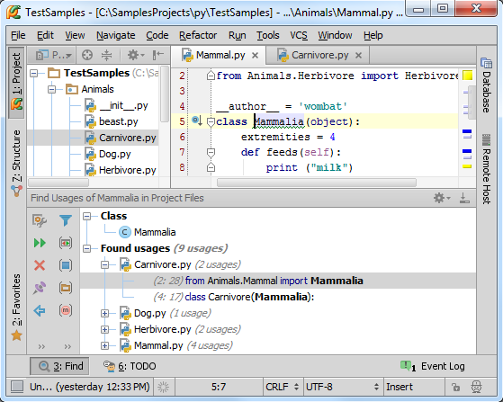
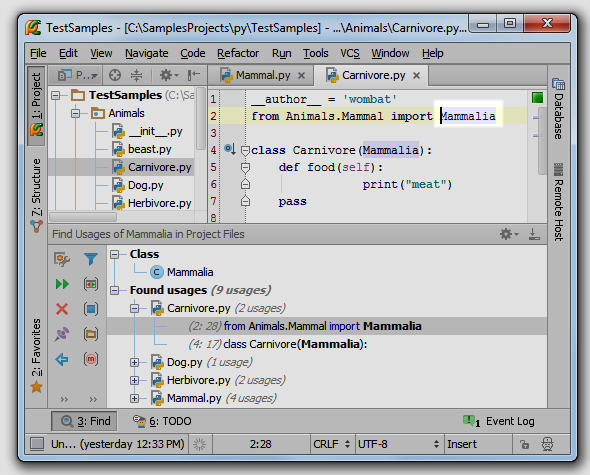
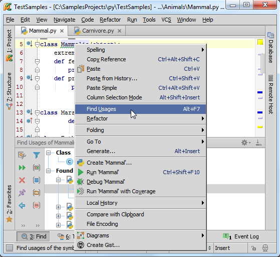
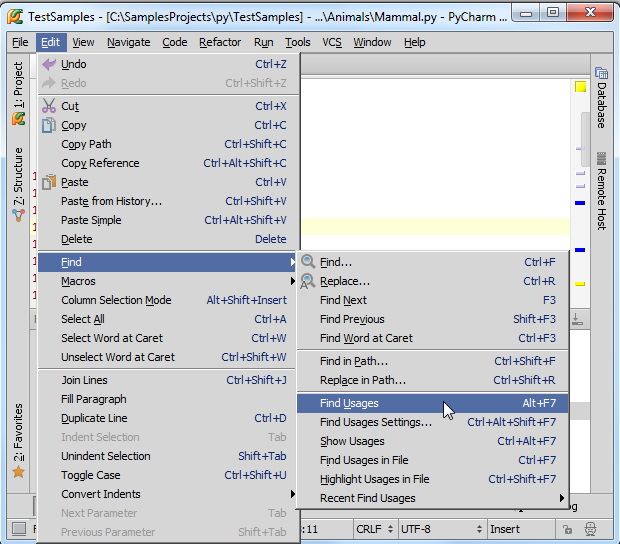
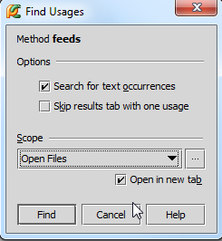
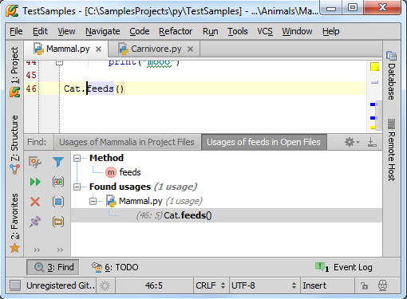
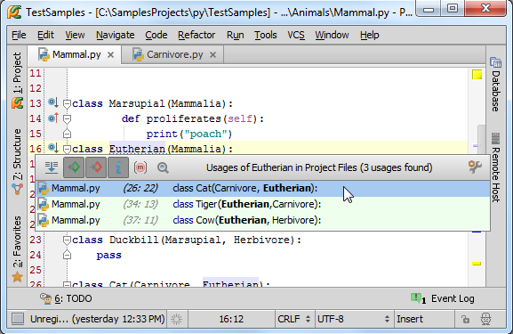
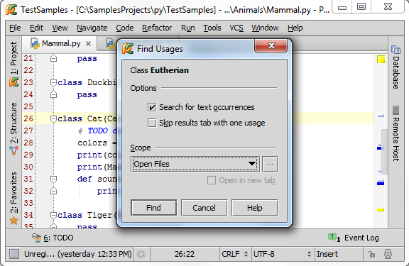
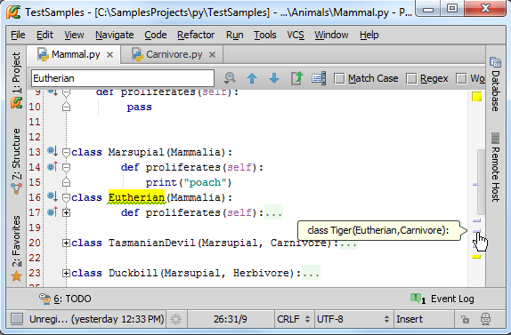

1、主题
这里我们将介绍Pycharm另外一项强力的搜索导航功能。假设你希望知道某个特定的类或方法都在工程中的哪些地方发挥了作用，也就是找出其所有的usages，这将是一个非常巨大而繁琐的工程，不过这里Pycharm会帮助我们实现。
2、准备工作
使用上一篇博客的Animals模块。
3、搜索所有引用usages
假设我们希望找出Mammalia类的所有使用环境，然后跳转到其中一处。将光标定位在类声明处，按下Alt+F7，在Find tool window窗口中显示当前类的usages：

选择了一处引用之后，回车，Pycharm会打开相关文件：

顺便提一句，你可以通过快捷菜单来实现这个功能，例如在Mammalia右击，观察弹出的快捷菜单内容：

通过这种方式你可以在默认设置下找到某个符号的所有usages。
4、其他查询方式
处理查找usages，Pycharm还提供了几种其他的查找方式，操作相似，目的相同，请看主菜单（Edit → Find）：

这些操作一部分已经制定了相关快捷键，接下来我们详细介绍。
5、改变搜索模式，通过对话框查找usages
将输入光标置于符号声明处，例如函数名feeds，按下Ctrl+Alt+Shift+F7，弹出对话框dialog box，在这个对话框中可以更改搜索选项。例如希望在当前打开的文件范围内来搜索，并且在新的编辑框中显示搜索结果：

单击Find按钮：Pycharm会通过一个新的编辑选项卡来显示feeds的搜索结果。双击（或者使用方向键选中并回车），Pycharm打开相关文件：

6、以列表形式显示usages
在某些情况下通过搜索窗口来查看搜索结果并不是很方便，Pycharm允许将搜索结果以弹出列表的形式反馈出来。例如我们想查找Eutherian类的所用使用环境：
将光标置于类声明处，按下Ctrl+Alt+F7（或者使用Edit→Find→Show Usages菜单命令）：

如果你通过方向键选中对应条目（例如Cat类）然后回车，Pycharm会跳转到相关文件。
现在回到弹出列表窗口，如果你想恢复到之前的Find tool window模式，只需单击即可。
最后，如果你对当前的搜索模式不满意，单击按钮打开设置对话框 dialog box：

7、在当前文件中查看usages
更简单的，只需按下Ctrl+Shift+F7，或者使用Edit→Find→Highlight Usages主菜单命令，问题解决：

正如你所见，每个usages在右槽对应都有一个标记，当将鼠标指针悬停在对应标记上时，Pycharm会给出简要的提示声明。单击这些标记来实现不同usages间的切换。